1. Installation
The kasane installer installs the keyboard driver (kbdlayer), the license management service, the editor (kasane), and the tray (the resident app) together. The installation folder is fixed at C:\Program Files\applet\kasane and cannot be changed.
This chapter describes the Subscription edition. The differences in the one-time purchase edition (Pro) are in "Installing the Pro edition", and moving from Subscription to Pro is in "Moving from Subscription to Pro".
What you need
- Windows 11 25H2 (x64 or ARM64)
- An account with administrator rights
- The downloaded
kasane-subscription_1.01.zip(kasane-pro_1.01.zipfor the Pro edition). You can download it again at any time from your Gumroad library
When you extract the zip, you get these files.
| File | Contents |
|---|---|
Install-kasane.exe |
The installer's start screen. Begin here |
KasaneSetup-ja-JP.msi, KasaneSetup-en-US.msi |
The installer itself, one per language. Install-kasane.exe picks one automatically |
License.ja-JP.txt, License.en-US.txt |
The license agreement (plain text) |
License.ja-JP.rtf, License.en-US.rtf |
The license agreement (the same content as shown on the installer screen, in RTF format) |
README.ja-JP.txt, README.en-US.txt |
The installation guide |
THIRD-PARTY-NOTICES.txt, the third-party folder |
The list of third-party software, and the full license texts |
Run Install-kasane.exe with the .msi files left in the same folder.
Steps
1. Run Install-kasane.exe
Run Install-kasane.exe. It is shown in Japanese if Windows is set to Japanese, and in English otherwise. You can switch with the link at the top right.
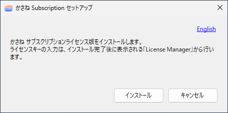
As the text says, you enter the license key in License Manager, which appears after installation (3. License Activation). Press Install to start the installer. If the .msi is not in the same folder, a message appears in red and the button cannot be pressed.
If you start Install-kasane.exe a second time while it is already open, the window that is already open is brought to the front. Only one installer can run at a time.
2. Follow the setup wizard
The wizard goes through these pages in order.
- Welcome
- License agreement: read it, and select I accept the terms in the License Agreement.
- Feature selection: all six features (driver, tray, license service, license manager, editor, common files) are required. You cannot change the selection.
- Settings folder
- Import settings file
- Ready to install, and progress
- Finish
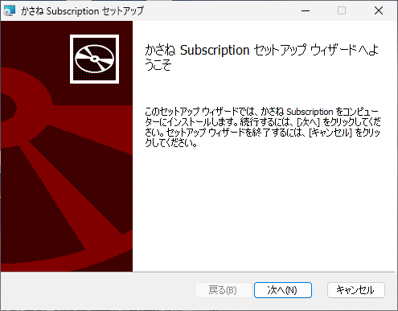
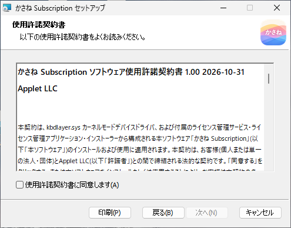
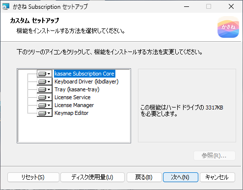
Settings folder
Specify where settings files (the settings for each keyboard, the tray settings, and the logs) are stored. It is set machine-wide as the environment variable KASANE.
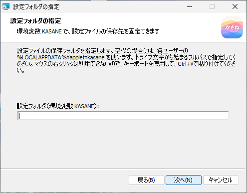
- If you leave it empty, settings are stored in each user's
%LOCALAPPDATA%\applet\kasane. - Press Browse... to open a screen for choosing a folder. If the box already contains a path (including when the environment variable
KASANEis already set), that folder is selected when the screen opens. - When you type in the box, enter a full path that starts with a drive letter, such as
D:\kasane. Even if the path has"around it, as when you copy a path in Explorer, the installer removes them. - If the folder you specify does not exist, the installer creates it. It does not change the permissions of a folder that already exists.
- Even if you specify the same settings folder again, the i8042prt settings are not restored. They are stored in the driver and are deleted by uninstalling. If you want to keep them, export your settings, including the recovery settings, before you uninstall (2. Uninstallation).
- If you use administrator protection (a Windows 11 feature), specify the folder here. The elevated editor and the normal tray then look at the same folder. If the folder cannot be written to, see 15. Backup and Migration for how to fix it.
To change it later, run the installer again (the "Data folder" tab of the settings dialog shows the current value). After changing it, restart, or sign out and sign in again, as needed.
Import settings file
This applies a settings file (*.kasane.json) exported from a previous environment to the driver during installation. It is off by default.
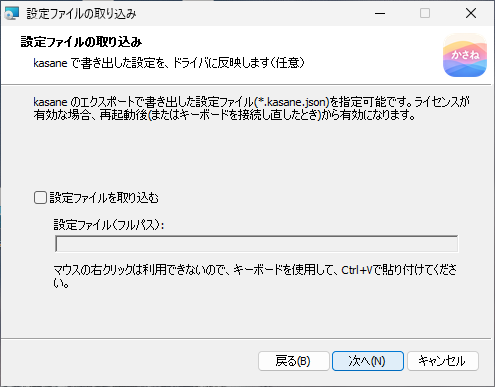
- Select Import a settings file.
- Enter the full path of the settings file. Right-click does not work in this box, so paste with
Ctrl+Von the keyboard. - When you press Next, if the file does not exist, a confirmation screen saying "Settings file not found" appears. Fix the path, or clear "Import a settings file".
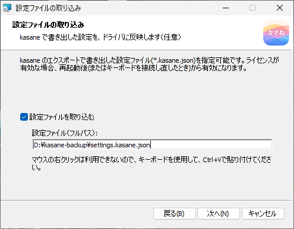
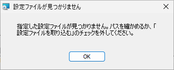
For a new installation, if the settings folder (the folder you specified on the previous page) contains kasane-recovery.kasane.json, that file is selected automatically, and the page appears with Import a settings file already selected. Clear the check box if you do not need it. This file is created in the settings folder when you choose Include recovery settings in Export (14. Import and Export). In an installation that shows no screens, the same file is imported if it is found in the settings folder given with KASANE_DIR. To stop that, see "Silent installation" and pass IMPORT_SETTINGS=0. An overwrite installation on a PC that already has kasane (an update or a repair) does not look for the file, so it is not selected automatically. Your settings are still in place, and this avoids replacing them with an old file. If you want to import, select Import a settings file and enter the path of the file.
When you import a file that contains recovery settings, the emergency-release key combination, the i8042prt settings, and the sharing scope of each keyboard are also restored to the driver. The tray settings (colors, language, how desktop icons are shown, and so on) and layouts you added yourself are restored when the tray first starts, only for the items that do not exist yet.
The imported settings take effect after a restart (or when you reconnect the keyboard). For a model that already has settings, they are replaced, and the previous settings are kept for one generation. You can restore the kept settings from the "Data folder" tab of the settings dialog (14. Import and Export). The result is recorded in %ProgramData%\applet\kasane\import.log.
3. Run the installation
Press Install to start copying and registering files. If you want to check your choices so far, press Back to return to the previous pages.
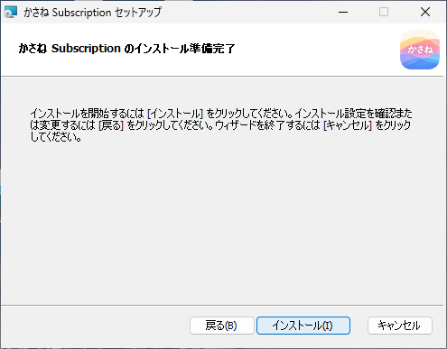
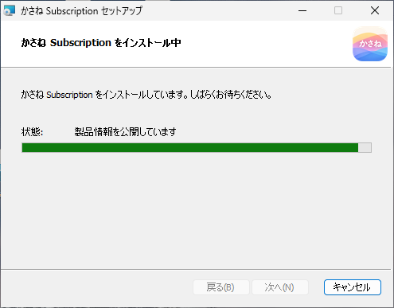
Installation finishes within a few minutes.
4. Restart
When installation finishes, the final page asks you to restart.
After you restart and sign in, License Manager opens automatically, just once. The tray icon also appears in the notification area. Until you restart, the driver is still stopped, so remapping does not work.
5. Activate the license and restart again
Enter the license key in License Manager and activate it (3. License Activation). Then restart once more, or reconnect the keyboard, and kasane is ready to use.
What is installed
| Item | Contents |
|---|---|
| Start menu | In the kasane Subscription folder inside the applet folder: "kasane" (the editor), "kasane Tray", and "kasane License Manager" |
| Autostart | The tray starts automatically at sign-in. If you use administrator protection, it is started by a Task Scheduler task so that no UAC prompt appears (4. Tray) |
| Service | The license management service kasaneLicenseSvc (starts automatically) |
| Driver | The keyboard class filter driver kbdlayer (takes effect after a restart) |
Overwrite installation
You can install a newer version directly over the old one. You do not need to uninstall. The driver settings and the license carry over.
Before an overwrite, an uninstall, or a repair, the installer stops the tray automatically.
Installing the Pro edition
For the Pro edition, extract kasane-pro_1.01.zip and install. The steps are almost the same as for the Subscription edition, with these differences.
| Item | Pro edition |
|---|---|
| Start screen | Install-kasane-pro.exe. The screen has a box for the license key |
| The installer itself | KasaneProSetup-ja-JP.msi, KasaneProSetup-en-US.msi. You can also install by starting an .msi on its own. An overwrite installation can be done without entering the license key. However, if the license key information is not left on the PC, you must enter the license key even when you start the .msi on its own |
| License key | Paste it into the box and press Install; the installer checks it with Gumroad just once (3. License Activation) |
| Feature selection | License Manager and the license service are not installed |
| After the restart | License Manager does not open. After you restart, kasane is ready to use |
| Start menu | The kasane Pro folder inside the applet folder |
| Service | The license management service is not installed |
You cannot install the Subscription and Pro editions on the same PC. If you start installing the Pro edition on a PC that has the Subscription edition, a message appears and you cannot go on.
Moving from Subscription to Pro
You cannot install over it. Uninstall first, then install again, in this order.
- If you want to keep your settings, export them from kasane (14. Import and Export).
- Uninstall the Subscription edition and restart (2. Uninstallation).
- Run
Install-kasane-pro.exe, enter the Pro license key, and install. - Restart.
If you install the Pro edition without restarting after the uninstall, the driver removal may not be finished, and installation may stop with an error (1722). In that case, restart and run it again. If you get the same error even after restarting, the license key may not have been confirmed (If something goes wrong).
The settings for each keyboard (project.json) and the tray settings carry over as they are. The Subscription license records (%ProgramData%\kbdlayer-license) are deleted when the Pro edition is installed, because the Pro edition does not use them.
Silent installation
You can install without showing any screens by using msiexec. Pass the settings folder and the settings file import with these properties.
| Property | Meaning | Example |
|---|---|---|
KASANE_DIR |
The settings folder (environment variable KASANE) |
KASANE_DIR=D:\kasane |
IMPORT_SETTINGS |
1 imports a settings file. 0 also stops the automatic import of the recovery file in the settings folder |
IMPORT_SETTINGS=1 |
IMPORT_SETTINGS_FILE |
The full path of the settings file to import | IMPORT_SETTINGS_FILE=C:\work\settings.kasane.json |
msiexec /i KasaneSetup-en-US.msi /qn KASANE_DIR=D:\kasane IMPORT_SETTINGS=1 IMPORT_SETTINGS_FILE=C:\work\settings.kasane.json
When administrator protection is enabled, a silent installation also creates an autostart task for each signed-in user. When nobody is signed in (for example, when a deployment tool runs it before sign-in), the task cannot be created, so autostart stays as a Run key. In that case a UAC prompt appears at every sign-in. Run the installer again (repair) while the user who will use kasane is signed in.
With the Pro edition, pass the license key in LICENSEKEY. The value of the key is not written to the silent installation log (/l*v).
msiexec /i KasaneProSetup-en-US.msi /qn LICENSEKEY=XXXXXXXX-XXXXXXXX-XXXXXXXX-XXXXXXXX
If something goes wrong
| Symptom | Cause and fix |
|---|---|
| "This is the wrong Windows version. It's for Windows 11." appears and you cannot go on | kasane cannot be installed on anything other than Windows 11 |
| An error (1722) saying to restart and try again, and the installation is rolled back | There are two possible causes. Use "Causes of error 1722" below to tell them apart |
| You want to see the log of a failed installation | Check %TEMP%\MSI*.LOG and %ProgramData%\kbdlayer-license\debug.log |
Causes of error 1722
Error 1722 means that a program the installer called partway through failed. In kasane, there are two possible causes. In both cases, installation is cancelled and the PC is not changed.
| Cause | When it applies | What to do |
|---|---|---|
| Removal of the driver is waiting for a restart | You uninstalled just before and have not restarted | Restart the computer, then install again |
| The Pro license key could not be confirmed | During installation of the Pro edition. You are not connected to the internet, the key is wrong, the usage limit was exceeded, and so on | Find the reason with the steps below |
If the same error appears even after you restarted, suspect the second cause. The Pro edition asks Gumroad about the key just once, partway through installation. If you cannot connect to the internet, this check fails and you get 1722.
Check the reason in this order.
- If you started from
Install-kasane-pro.exe, the reason for the failure is shown on the screen. You can look up the wording in the "When the key could not be confirmed" table in 3. License Activation. - If you ran the
.msidirectly, the reason is not shown and only 1722 appears. In that case, openC:\Windows\Temp\kasane-pro-activator.log. It records the progress of the check and the reason for the failure. - If the network was the cause, check your connection and run
Install-kasane-pro.exeagain. Also check that communication with Gumroad (https://api.gumroad.com) is not blocked, for example by a company network. The list of destinations is in "When you cannot connect to the license server" in 3. License Activation.
If you could not connect to the internet and nothing reached Gumroad, the usage count of the key does not increase. After you fix the connection, you can enter the same key as it is.
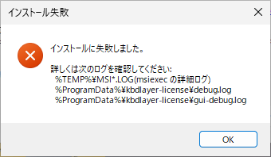